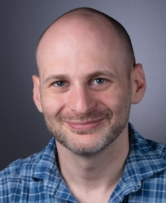
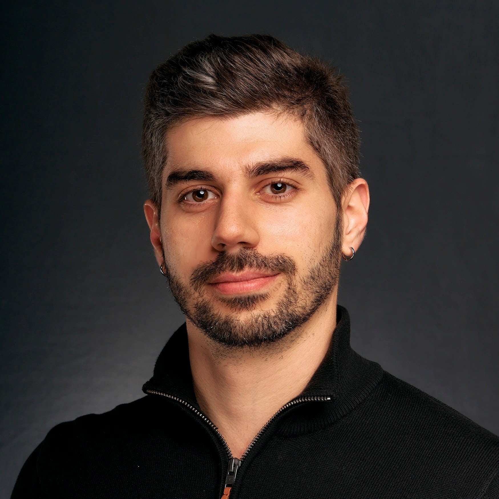
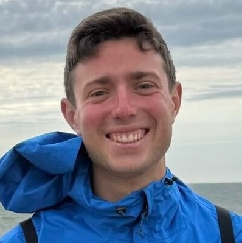

CS Theory Club
Undergraduates learning about theoretical computer science.

Wednesdays at 5:00 PM — CIS 450
5:00-5:30 PM: Reception/Social
5:30-6:30 PM: Talk
Pizza provided!
To join our email list, send the subject "join" to CS-THEORY-UGRAD-L-REQUEST@cornell.edu (instructions).
Questions? Email us at mn542@cornell.edu
About Us
Come to any of our meetings! We warmly welcome anyone who is interested---undergraduate or graduate---from any area of study. We strive to make our meetings as accessible as possible. Because TCS requires a certain level of mathematical maturity, we do expect experience with proofs and probability at the level of CS 2800 and recommend familiarity with algorithms at the level of CS 4820 (see: CS 4820 Lectures).
Topics We Explore
Algorithms
Design and analysis of efficient algorithms.
Complexity Theory
Understanding computational hardness.
Cryptography
Theoretical foundations of secure computation.
Quantum Computing
Power and limits of quantum algorithms.
Learning Theory
Statistical and computational foundations of generalization.
Automata Theory
Languages and the structure of computation.
Schedule






